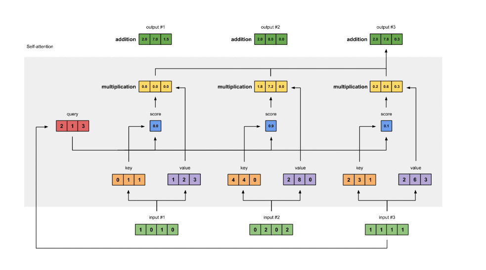
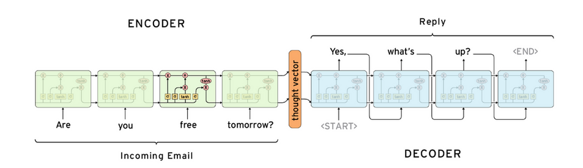
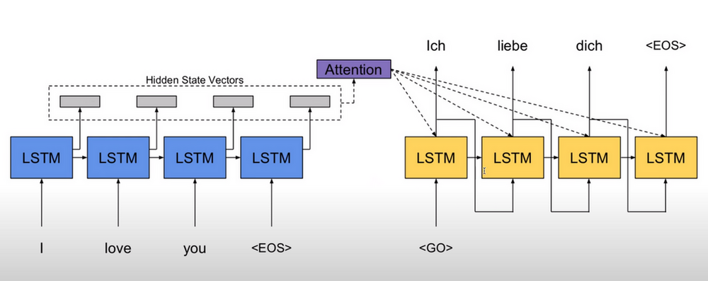
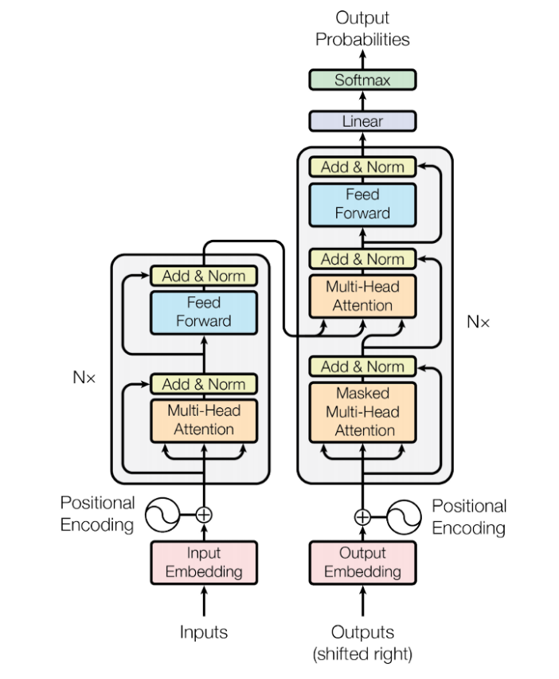

Attention
Table of Contents
1 Attention
https://d2l.ai/chapter_attention-mechanisms/index.html
https://towardsdatascience.com/illustrated-self-attention-2d627e33b20a
1.1 Self Attention

class AttentionLayer(nn.Module): def __init__(self, in_features, out_features): super().__init__() # (I, O) self.Q = nn.Parameter(torch.zeros(in_features, out_features)) self.Q = nn.init.xavier_uniform_(self.Q) # K self.K = nn.Parameter(torch.zeros(in_features, out_features)) self.K = nn.init.xavier_uniform_(self.K) # V self.V = nn.Parameter(torch.zeros(in_features, out_features)) self.V = nn.init.xavier_uniform_(self.V) def forward(self, input): # input: (B, N, I) # Q: (B, N, O) Q = torch.matmul(input, self.Q) # K: (B, N, O) K = torch.matmul(input, self.K) # V: (B, N, O) V = torch.matmul(input, self.V) # dot_product(Q, K) # dot product 可以用来度量两个向量的相似度, dot # product 越大, 相似度越大. dot_product(a,b)=|a|*|b|*cos(a,b) dot = torch.bmm(Q, K.transpose(1, 2)) # dot: (B, N, N) score = F.softmax(dot, dim=-1) out = torch.bmm(score, V) # out: (B, N, O) return out
Self Attention 的输入是 (B,N,I), 输出为 (B,N,O), 其中:
- B 为 batch
- N 为序列长度
- I,O 为序列中每个向量的长度
1.1.1 Multi-Head Self Attention
使用多个 self.{K,Q,V}, 计算出多个 attention score, 然后把这些 score 做 concat 后再用一个 linear 层转换为单个 score, 即为 multi-head self attention.
为什么要用多个 head? 大概和 conv 为什么要用多个 channel 差不多吧
1.1.2 Cross Attention
self attention 是 cross attention 的特例.
正常情况下我们是计算 source 和 target 两个序列的 cross attention, 其中 Q 属于 source, {K,V} 属于target.
当 source 与 target 相同时, 即为 self attention.
1.1.3 Self Attention vs. RNN/CNN/FFN
1.1.3.1 FFN
self attention 与 ffn (feed forward network) 也类似, 因为它能看到整个序列的数据, 但它的参数量很小
1.1.3.2 CNN
self attention 与 cnn 类似, 能共享参数 (self.{K,Q,V}), 处理变长数据. 如果把 attention score 类比成 cnn 的 receptive field, 是否可以粗略的认为 multi-head self attention 是 receptive field 会变化的 cnn?
有研究表明 multi-head self attention 包含任意 cnn 的能力: ON THE RELATIONSHIP BETWEEN SELF-ATTENTION AND CONVOLUTIONAL LAYERS
1.1.3.3 RNN
self attention 与 rnn 类似, 可以处理变长序列, 甚至它的输入输出的 shape 与标准的 rnn 都是相同的. 但 self attention 可以解决 rnn 的几个问题:
- basic rnn 一般只能看到序列中前面部分的数据
- rnn 通过 hidden state 能传递的 context 有限, 因为 Basic RNN 难以训练, 无法处理太长的序列
- rnn 只能串行的处理序列
(ps. lstm 和 bi-directional rnn 一定程度上可以解决前两个问题, 所以并没有说 lstm 一定没有 attention 好用)
用 rnn 处理序列时最大的问题是记不住太长的上下文, 例如下面的翻译问题:
"it is raining cats and dogs" -> "天下着倾盆大雨 "
当 rnn 处理到 `dogs`, 它需要 `记住` 前面有过 `raining` 和 `cats`, 才不会把 `dog` 翻译成 `狗`.
self attention 与 rnn 相比:
- 它可以看到整个序列的信息, 所以也没有单向 rnn 的问题.
- 它可以看到整个序列的信息, 相当于把很 `深` 的 rnn 变成很 `宽` 的网络, 避免 rnn 序列过长时的性能问题
- self attention 可以并行
- 通过 attention score, self attention 可以知道 `dogs` 与 `raining` 之间的 score 更高, 所以它不仅能看到整个序列, 还能知道序列中哪些数据更重要.
1.1.4 Computational Complexity
假设 {input, outut} vector 的长度均为 d, 序列长度为 n:
self attention 的计算量大约为 \(n^2*d\)
\(n^2\): 序列中任何两个 item 之间都需要计算 attention
\(d\): 单个 attention 主要的计算量是 dot product
rnn 的计算量大约是 \(n*d^2\)
\(n\): rnn 是顺序计算 item
\(d^2\): rnn cell 里用了多个 ffn 把 input vector 转换为 output vector
cnn 的计算量大约是 \(k*n*d^2\)
为了处理序列, 假设 cnn 是 cnn1d, input/output channel 为 d, k 为 kernel 大小, n 为序列长度
\(n\): 一共 n 个输出
\(k*d^2\): 每个输出需要的计算量
1.2 Bahdanau Attention
https://arxiv.org/pdf/1409.0473.pdf 2016/5
bahdanau attention 是把 cross attention 应用到 seq2seq 的尝试.
1.2.1 Seq2Seq Model

1.2.1.1 test seq2seq model
- encoder 输入序列为 `hello world`, 产生一个 hidden state (上图中的 thought vector)
- decoder 每一个输入为 <START>, 产生 x
- decoder 每二个输入为 argmax(x), 产生 y
- decoder 每二个输入为 argmax(y), 产生 z
- …
对于一个训练好的模型, 我们期望 argmax(x), argmax(y), argmax(z), argmax(w), argmax(k), 分别是 `你`,`好`,`世`,`界`,<END>
ps. 每次输出都选 argmax 做为下一次的输入实际上并不一定是最好的结果, 这种做法相当于 greedy search, 还有一种称为 beam search 的方法 (实际上就是 DP)
1.2.1.2 train seq2seq model
假设一条输入样本为 `hello world`, 标签为 `你好世界`
- encoder 输入序列为 `hello world`, 产生一个 hidden state
- decoder 每一个输入为 <START>, 产生数据需要与 `你` 来计算 loss
- decoder 第二个输入为 `你`, 产生数据需要与 `好` 来计算 loss
- `世` -> `界`
- `界` -> <END>
可见 train 与 inference 的方法并完全不相同, 因为训练时没有把第一个输入的输出做为第二个输入, 而是直接使用了标签中的数据, 这种方法叫 teacher forcing. teacher forcing 可以让 seq2seq 训练的快一些, 它意在避免训练时 `错上加错` 的情形.
Backlinks
RNN (RNN > Seq2Seq Model): Seq2Seq Model
1.2.2 Attention as Decoder
seq2seq 的问题是 hidden state 做为 decoder context 无法保存很多信息.
bahdanau attention 的做法是保留 encoder 的所有输出做为 context, 在 decoder 端计算 cross attention (Q 来自 decoder, K, V 来自 context) 做为 `hidden state`

1.3 Transformer
2017 年 google 提出了 transformer: Attention is all you need, google translate 基于 transformer 实现. 与 bahdanau attention 有些类似:
- transformer 也是一个 encoder-decoder 结构
- transformer 也使用了 attention 做为 decoder
- 不同的是 transformer 使用了 self attention 做为 encoder, 代替原来的 rnn

1.3.1 InputEmbedding
InputEmbedding 通常是一个 word embedding (Word2vec), 与 rnn 不同的是, InputEmbedding 可以被并行处理.
1.3.2 OutputEmbedding
这里的 OutputEmbedding 指的是训练时的 teacher forcing 方法使用的输入, 即标签数据. OutputEmbedding 在 train 时可以被并行处理.
1.3.3 FeedForward
FeedForward 指 Position-Wise Feed Forward Network, 实际是就是 (fc+fc+relu) 组成的网络, 不同的是指针对序列中的每一项都使用同一个 ffn 去处理 (position-wise), 所以 ffn 的输入输出的规格与 rnn, self attention 是类似的.
为什么要 position-wise? 因为输入序列是变长的, 而 ffn 无法处理变长的数据.
1.3.4 Add&Norm
- Add 是 ResNet 中的 skip connection
- Norm 是 Layer Normalization
1.3.5 Masked Self Attention
decoder 的第一个 self attention 称为 masked self attention: 对于 \(x_n\), 它只会计算 \(x_n\) 与 \(\{x_i|i <=n\}\) 的 attention.
decoder 是一个 auto-regressive (自回归) 模型: 在 test 时 decoder 一步一步产生输出, 且上一步的输出会做为下一步的输入. 所以 self attention 在 test 时无法一次性 `看到` 所有的输入.
test 时 self attention 的计算过程为:
- output embedding input_1 = <START>, 计算 <START> 和 {<START>} 的 attention, decode_1 = `你`
- output embedding input_2 = `你`, 计算 `你` 和 {<START>, `你`} 的 attention, decode_2 = `好`
- output embedding input_3 = `好`, 计算 `好` 和 {<START>, `你`, `好`} 的 attention, decode_3 = '世'
- …
通过 mask 可以保证 {train, test} 时计算 attention 的行为是一致的.
1.3.6 Cross Attention
Decoder 的第二个 attention 是一个 cross attention (而非 self attention), 其中:
- Q 来自 decoder
- K,V 来自 encoder
通过这个 attention, encoder 的输出被导入到 decoder 中 (相当于 seq2seq 中的 hidden state, 但比单一的 hidden state 包含更多的信息), 所以有时也把它叫做 encoder-decoder attention
1.3.7 Positional Encoding
对于 self attention 来说, 针对 `bug me not` 和 `bug not me` 两个序列分别计算 attention 时, 对应于 `bug` 的 attention 结果是没有区别的, 因为 attention 只是加权求和, 并没有考虑序列的顺序.
因此, self attention 会把序列中的每个元素的索引 encoding 后加进去.
- positional encoding 的长度与 embedding 相同, 以便可以直接相加
positional encoding 的计算方法有很多, 例如如下的方法:
\(PE(pos,2i)=sin(pos/10000^{2i/embedding\_size})\) \(PE(pos,2i+1)=cos(pos/10000^{2i/embedding\_size})\)
例如:
- 假设 `hello word` 之前的 embedding 是 ((1,2,3,1),(2,1,8,6)),
- 手工定义 0 对应的 encoding 为 (e00,e01,e02,e03), 1 对应 (e10,e11,e12,e13)
- 加入 positional encoding 后 hello world 会变成 ((1+e00,2+e01,3+e02,1+e03),(2+e10,1+e11,8+e12,6+e13))
1.4 BERT
BERT 使用 transformer 的 encoder 部分, 使用自监督学习的方法训练出来一个通用的 pre-train 模型.
其它基于 BERT 的下游任务会使用用监督学习的方法训练出许多针对不同任务的模型.
1.4.1 Train BERT
- 给定大量的文本, 例如 `how are you`
- 随机把某个词 mask 掉 (例如把那个词替换成某个特殊的标记 <MASK>), 变成 `how <MASK> you`
- 训练时它的输出序列的第二个输出的标签是 `are`
BERT 实际上类似于 word2vec, 随机 mask 的作法和 cbow 也有些类似, 但它用起来与 word2vec 并不完全相同:
- word2vec 输入是一个词, 针对同一个 word 会产生同样的 embedding
- bert 的输入是一个序列, 不同的输入序列例如 `running dog` 和 `running cat` 针对 `running` 产生的 embedding 未必一模一样
1.4.2 BERT Model Size
BERT base 模型的大小:
- 12 layers (transformer blocks)
- 12 attention heads
- 110 million parameters
- output size of 768-dimensions.
BERT large 模型的大小:
- 24 layers (transformer blocks)
- 16 attention heads
- 340 million parameters
- output size of 1024-dimensions.
BERT base 训练:
- 3 billion words
- 1 million epoch
- 8 days with google TPU
1.4.3 Fine Tune
训练好的 BERT 相当于一个能够做填空题的 encoder, 然后许多任务可以写成这种 `填空题 ` 的形式, 先定义一个模型, 在 BERT 之上加上一个简单的 linear 层, 然后提供标签数据在 BERT 基础之上再训练 (fine-tune), 例如:
判断句子的 class
输入为: <MASK> hello world, 标签是 class
虽然 BERT 这里会输出 3 个值, 但只需要关注第一个对应 <MASK> 的值
词性标著
输入为: hello world, 标签是 `vt. n.`
判断两个句子是否有矛盾
输入为: <MASK> he is drinking <SEP> he is dead, 标签是 `Y`